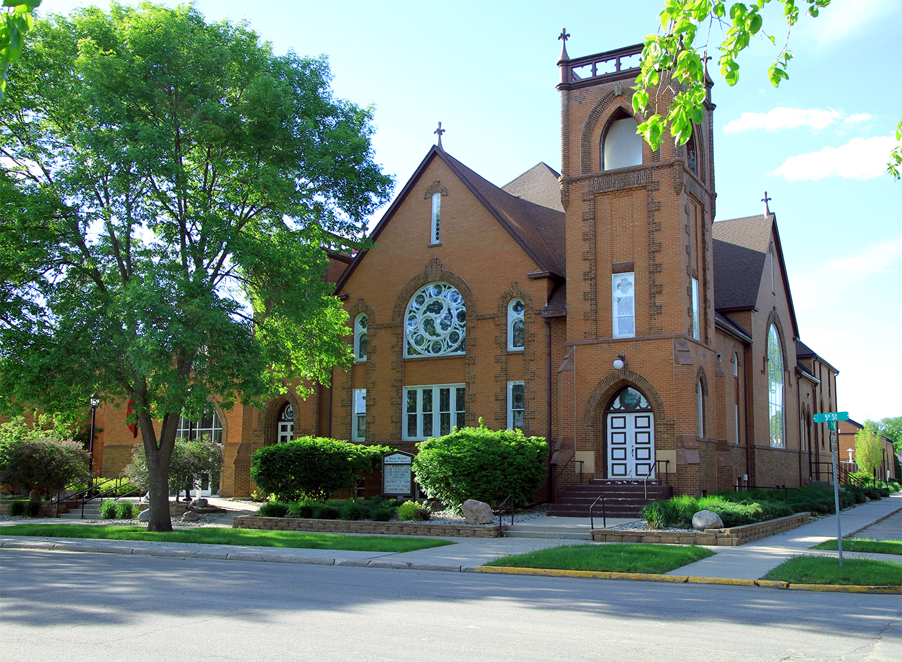

Who We Are
Our Story
Brookings First United Methodist Church has been a part of this community for well over a century. From our early days on the Dakota prairie to today, we have remained committed to the Wesleyan values of grace, justice, and love in action.
We are a congregation that takes scripture seriously and takes our neighbors even more seriously. We believe that faith without works is incomplete, and we strive to embody God's love in tangible ways — through service, hospitality, and authentic community.

What Drives Us
We believe in God's prevenient, justifying, and sanctifying grace — freely available to every person, no matter where they've been.
We approach the Bible with reverence and thoughtful inquiry, held alongside tradition, experience, and reason — the Wesleyan Quadrilateral.
Faith calls us outward. We are committed to serving Brookings and participating in God's work of justice and mercy in the world.
Our Team
Pastor
Add a brief bio here — background, calling, family, and what Jen loves about the Brookings community.
Music Coordinator
Add a brief bio here about Bunny's role in leading worship music at Brookings First UMC.
Education Coordinator
Add a brief bio here about Gretchen's work in faith formation and Christian education programs.